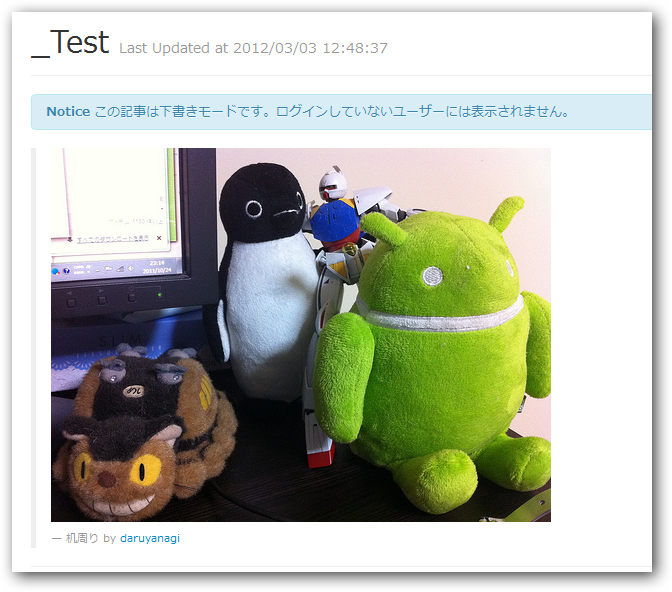

Flickr の URL を画像タグへ変換する（oEmbed）
公開日：
eEmbedというのは、あるリソースのURL(例えばFlickrの特定の写真のページのURL)を
サードパーティ上で、写真自体の埋め込みに変換したいときに、
埋め込みに必要なパラメータを取得するためのプロトコルみたいです。
前にやったときは API を使って実装したのだけど、こっちだと API キーや秘密鍵を取得しないで同じことができそう。
using System;
using System.Collections.Generic;
using System.Linq;
using System.Web;
using Codeplex.Data;
using System.Net;
public static class FlickrHelper
{
private static readonly string Endpoint =
@"http://www.flickr.com/services/oembed";
public static string FORMAT_URL =
@"{0}?url={1}&maxwidth={2}&maxheight={3}&format={4}";
public static string FORMAT_HTML_TAG = @"
<blockquote>
<p><img src='{0}' alt='{1}' /><p>
<p><small>{1} by <a href='{3}'>{2}</a></small><p>
</blockquote>
";
public static string FORMAT_ERROR =
@"<p class='error'>{0}</p>";
public static string GetHtml(string url,
string max_width = "500", string max_height = "500")
{
try
{
return GetHtml(url,
int.Parse(max_width), int.Parse(max_height));
}
catch (Exception e)
{
return string.Format(FORMAT_ERROR, e.Message);
}
}
public static string GetHtml(
string url, int max_width, int max_height)
{
var format = "json";
var address = string.Format(FORMAT_URL,
Endpoint, url, max_width, max_height, format);
using (var client = new WebClient())
{
try
{
var response = client.DownloadString(address);
var info = DynamicJson.Parse(response);
return string.Format(FORMAT_HTML_TAG,
info.url, info.title,
info.author_name, info.author_url);
}
catch (Exception e)
{
return string.Format(FORMAT_ERROR, e.Message);
}
}
}
}

できた。けど、これだと短縮URL（flic.kr）は使えないみたい。自分で Base58 のデコード処理*1なり、URLを展開する処理なりを追加する必要がある。 Base58 のデコード処理では Photo ID しか取得できず、結局 API が必要になるので、今回は汎用の短縮URL展開処理を使った。
public static Uri ExpandUrl(this Uri input)
{
var req = (HttpWebRequest)WebRequest.Create(input);
WebResponse res = req.GetResponse();
return res.ResponseUri;
}
みたいな拡張メソッドを用意して、
if (url.StartsWith("http://flic.kr/p/"))
{
url = new Uri(url).ExpandUrl().ToString();
}
短縮URLを展開してあげる。
*1:短縮URLはPhoto IDをBase58でエンコードしてある